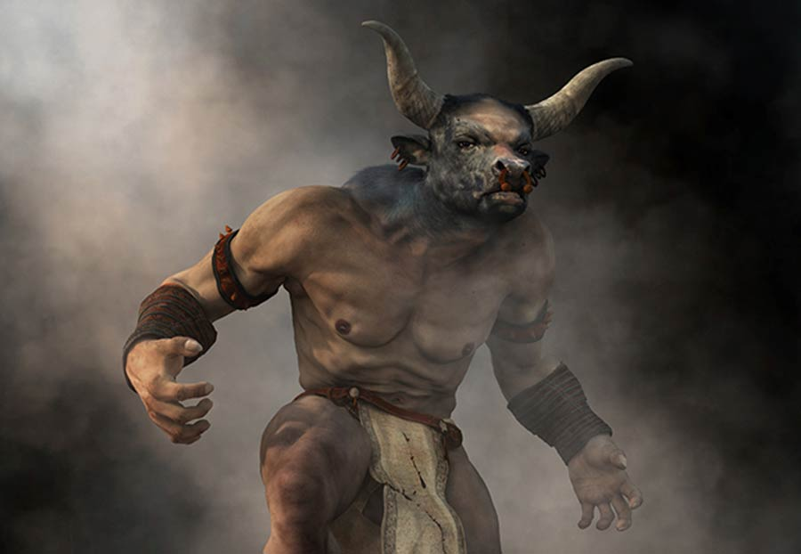
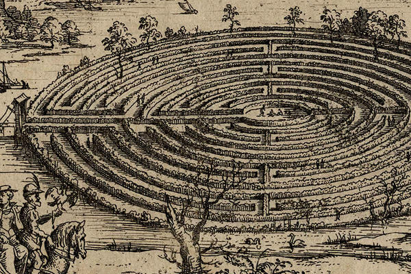

The Minotaur & The Labyrinth


Deep beneath the palace of Knossos in Crete lay the Labyrinth—an impossibly complex maze designed by the legendary architect Daedalus. At its dark center trapped a monstrous creature born of a divine curse: the Minotaur, a beast with the body of a man and the head of a bull.
ක්රීට් (Crete) දූපතේ නොසෝස් (Knossos) මාලිගයට ගැඹුරින් යටින් **ලැබිරින්ත්** (Labyrinth) නමින් හැඳින්වෙන අතිශය සංකීර්ණ වංකගිරියක් පිහිටා තිබුණි. මෙය සුප්රසිද්ධ ගෘහ නිර්මාණ ශිල්පී ඩෙඩලස් (Daedalus) විසින් නිර්මාණය කරන ලද්දකි. එහි අඳුරු මධ්යයේ දේව ශාපයකින් උපන් බිහිසුණු සත්වයෙකු සිර කර සිටියේය: ඒ මිනිසෙකුගේ ශරීරයක් සහ ගොනෙකුගේ හිසක් සහිත මිනොටෝර් (**Minotaur**) නම් රාක්ෂයාය.
The Curse of King Minos
The myth begins when King Minos of Crete refused to sacrifice a majestic white bull sent by the sea god Poseidon. Enraged, Poseidon cursed Minos's wife to fall in love with the bull, resulting in the birth of the Minotaur. Unable to bring himself to kill the monster, Minos hid it away inside the inescapable maze.
මිනොස් රජුගේ ශාපය (The Curse of King Minos)
මෙම මිථ්යා කතාව ආරම්භ වන්නේ ක්රීට් හි මිනොස් (Minos) රජු, පොසයිඩන් (**Poseidon**) සාගර දේවතාවා විසින් එවන ලද තේජවන්ත සුදු ගොනෙකු බිලිදීම ප්රතික්ෂේප කිරීමත් සමඟය. මෙයින් කෝපයට පත් පොසයිඩන් දේවතාවා, මිනොස් රජුගේ බිරිඳ එම ගොනා සමඟ ආදරයෙන් බැඳීමට සලස්වමින් ශාප කළේය. එහි ප්රතිඵලයක් ලෙස මිනොටෝර් උපත ලැබීය. මෙම ම්ලේච්ඡ සත්වයා මරා දැමීමට මිනොස් රජුට සිත නොදුන් නිසා, ඔහු කිසිවෙකුට පැන යා නොහැකි මෙම වංකගිරිය තුළ සත්වයා සඟවා තැබුවේය.
The Cruel Tribute
After defeating Athens in war, King Minos demanded a horrific tribute. Every nine years, Athens was forced to send seven young men and seven young women to Crete. These innocent youths were cast into the dark corridors of the Labyrinth to be hunted and devoured by the ferocious Minotaur.
කුරිරු පඬුරු කප්පම (The Cruel Tribute)
යුද්ධයෙන් ඇතන්ස් (Athens) නුවර පරාජය කිරීමෙන් පසු මිනොස් රජු දරුණු කප්පමක් ඉල්ලා සිටියේය. ඒ අනුව සෑම වසර නවයකට වරක් ඇතන්ස් නුවරින් **තරුණයන් හත්දෙනෙකු සහ තරුණියන් හත්දෙනෙකු** ක්රීට් දූපත වෙත එවිය යුතු විය. මෙම අහිංසක තරුණ තරුණියන් ලැබිරින්ත් වංකගිරියේ අඳුරු කොරිඩෝවලට ඇතුළු කරන ලද අතර, එහිදී ඔවුන්ව මිනොටෝර් විසින් දඩයම් කර බිලිගනු ලැබීය.
Theseus and the Thread of Fate
- The Volunteer: Determined to end the slaughter, the heroic Athenian prince Theseus volunteered to be part of the tribute, vowing to slay the beast.
- Ariadne’s Clue: King Minos’s daughter, Ariadne, fell in love with Theseus. She gave him a weapon and a simple ball of red thread—Ariadne's Thread—to unravel as he entered the maze.
- The Battle: Creeping through the pitch-black tunnels, Theseus tracked the monster down, killed it in a brutal struggle, and used the thread to guide the Athenians safely back to the entrance.
තීසියස් සහ දේවායත්ත නූල්පට (Theseus and the Thread of Fate)
- ස්වේච්ඡාවෙන් ඉදිරිපත් වීම: මෙම මහා විනාශය අවසන් කිරීමට අධිෂ්ඨාන කරගත් ඇතන්ස් හි වීර කුමාරයෙකු වූ **තීසියස්** (Theseus), රාක්ෂයාව මරා දැමීමේ අරමුණින් මෙම කප්පමේ කොටසක් වීමට ස්වේච්ඡාවෙන් ඉදිරිපත් විය.
- ඇරියැඩ්නිගේ උපකාරය: මිනොස් රජුගේ දියණිය වූ ඇරියැඩ්නි (Ariadne) තීසියස් සමඟ ආදරයෙන් බැඳුණාය. ඇය ඔහුට රහසිගත ආයුධයක් සහ රතු නූල් පන්දුවක් (**Ariadne's Thread**) ලබා දුන්නේ වංකගිරියට ඇතුළු වන විට එය දිග හරිමින් යන ලෙස පවසමිනි.
- සටන: තාරකා අඳුරු උමං දිගේ ගමන් කළ තීසියස්, මිනොටෝර් සිටින තැන සොයාගෙන, දරුණු සටනකින් පසු ඌව මරා දැමූ අතර, නැවත පැමිණීමේදී එම නූල් පන්දුව ඔස්සේ ඇතන්ස් වැසියන්ව නිරුපද්රිතව වංකගිරියේ ද්වාරය වෙත රැගෙන ආවේය.
Symbolism & Historical Metaphor
- The Architecture of Fear: The Labyrinth symbolizes the chaos of the human mind, hidden secrets, and inescapable traps.
- The Palace of Knossos: Archeologists believe the myth was inspired by the real Palace of Knossos, an enormous, multi-story structure with hundreds of confusing, interconnected rooms.
- Bull Worship: The Minoan civilization deeply revered bulls, practicing a dangerous sport called "bull-leaping," which likely fed the folklore of the half-bull monster.
සංකේතවාදය සහ ඓතිහාසික පසුබිම (Symbolism & Metaphor)
- භීතියේ ගෘහ නිර්මාණ ශිල්පය: ලැබිරින්ත් වංකගිරිය මඟින් මිනිස් මනසේ පවතින අවුල් සහගත බව, සැඟවුණු රහස් සහ ගැලවිය නොහැකි උගුල් සංකේතවත් කරයි.
- නොසෝස් මාලිගය: පුරාවිද්යාඥයන් විශ්වාස කරන්නේ මෙම මිථ්යා කතාවට ආභාසය ලැබුණේ සැබෑ නොසෝස් මාලිගයෙන් (Palace of Knossos) බවයි. එය සිය ගණනක් පටලැවිලි සහගත, එකිනෙකට සම්බන්ධ කාමර සහිත දැවැන්ත මහල් ගොඩනැඟිල්ලක් විය.
- ගොන් වන්දනාව: මිනෝවන් (Minoan) ශිෂ්ටාචාරයේ වැසියන් ගොනුන්ට බෙහෙවින් ගෞරව කළ අතර, ඔවුන් "bull-leaping" (ගොනුන් මතින් පැනීම) නමැති භයානක ක්රීඩාවක නිරත වූහ. මෙම සංස්කෘතිය අර්ධ-ගොන් රාක්ෂයෙකු පිළිබඳ ජනප්රවාද නිර්මාණය වීමට හේතු වන්නට ඇත.